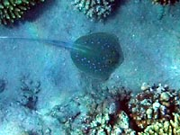
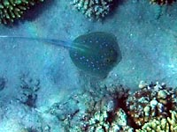

Usually scat
slides along bottom
A scat with blue spots
(Taeniura lymma)
A Blue-spotted stingray has got a pair of poisonous needles at its tail. However it seems at this photo the scat has got a damaged shorten tail.

Usually scat
slides along bottom
(Taeniura lymma)
A Blue-spotted stingray has got a pair of poisonous needles at its tail. However it seems at this photo the scat has got a damaged shorten tail.